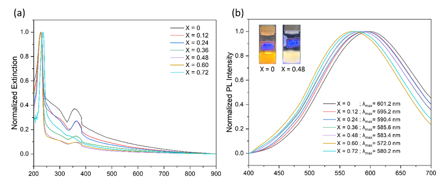

Photophysics • Nanomaterials • Ultrafast Spectroscopy
Investigation of how halide composition controls self-trapped exciton emission, defect-mediated recombination, and ultrafast excited-state dynamics in lead-free double-perovskite nanocrystals.
This project investigated Cs₂Ag₀.₆Na₀.₄In₀.₈Bi₀.₂Cl₆₋ₓBrₓ lead-free double-perovskite nanocrystals to understand how partial substitution of Cl⁻ by Br⁻ influences their structural and photophysical properties.
Steady-state spectroscopy, time-resolved photoluminescence, and transient absorption spectroscopy were combined to investigate self-trapped exciton emission, trap-mediated relaxation, and radiative and nonradiative recombination pathways.
Moderate Br⁻ incorporation improved the optical quality of the nanocrystals by suppressing defect-assisted recombination, while excessive Br⁻ substitution reintroduced additional trap-related losses.

Partial substitution of Cl⁻ by Br⁻ strongly influenced the optical properties of the double-perovskite nanocrystals.
Moderate Br⁻ incorporation enhanced the broad self-trapped-exciton emission, increasing the photoluminescence quantum yield from approximately 29% for the Br-free material to 48% at intermediate compositions.
Increasing Br⁻ content also produced a progressive blue shift of the broadband emission, demonstrating composition-controlled tuning from warmer toward cooler white-light emission.
At higher Br⁻ contents, the photoluminescence intensity decreased, indicating the re-emergence of defect-assisted nonradiative recombination.